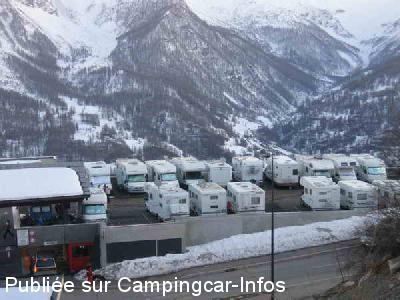
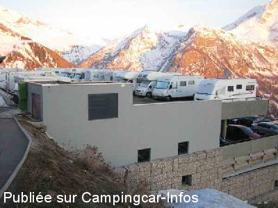

ASN = Aire de services avec stationnement nuit possible de :
ORCIÈRES
(N° 799)
Accès/adresse :
Station d'Orcières
Parking P2
Casse Blanche
05170 ORCIÈRES
Parking P2
Casse Blanche
05170 ORCIÈRES
Latitude : (Nord) 44.69511° Décimaux ou 44° 41′ 42′′
Longitude : (Est) 6.3261° Décimaux ou 6° 19′ 33′′
Tarif : 2014
Stationnement, services, électricité 16A : 12 à 18 €
Paiement :
- l'hiver au gardien
- l'été à l'Office du Tourisme
Type de borne : RACLET
Services :


Restauration
Supérette
Lave-linge
Autres informations :
Ouvert du du 17/12 au 28/04 et du 30/06 au 02/09
24 emplacements
Tél gardien parking : + 33(0)492 556 641
Tél Office du Tourisme : +33(0)492 558 989
http://www.orcieres.com

Le 05/11/2015 par F Dichamp

Le 05/11/2015 par F Dichamp
de
PO
le 09/03/2014 :
De passage les 4 et 5 mars 2014. Nous avons pris la dernière place disponible, celle sous l'abri. Pour tout dire, on entre dans cette aire au chausse-pied. Pas de problème sur la disponibilité de l'eau et de l'électricité, mais ce n'était pas le cas de tout le monde. A noter aussi une barrière capricieuse, heureusement que le gardien est là pour ouvrir.
De passage les 4 et 5 mars 2014. Nous avons pris la dernière place disponible, celle sous l'abri. Pour tout dire, on entre dans cette aire au chausse-pied. Pas de problème sur la disponibilité de l'eau et de l'électricité, mais ce n'était pas le cas de tout le monde. A noter aussi une barrière capricieuse, heureusement que le gardien est là pour ouvrir.
de
piero
le 25/11/2013 :
bonjour, désolé de vous apprendre que les tarifs de 12 euros en 2012 / 2013 passent à 18 euros en 2014 vous avez remarqué que cela fait une augmentation de cinquante pour cent pour les mêmes services
bonjour, désolé de vous apprendre que les tarifs de 12 euros en 2012 / 2013 passent à 18 euros en 2014 vous avez remarqué que cela fait une augmentation de cinquante pour cent pour les mêmes services
de
Manolo81
le 26/04/2013 :
Aire très bien située du centre de la station, du complexe sportif et du départ des pistes de ski. Un escalator vous mêne dirctement au télésiège. Les places sont serrées certes, mais que demander de plus? Il manque toutefois une grille au sol pour les vidanges des eaux grises. Cela dit, comme les manœuvres ne sont pas aisées, ça semble logique.
Le paiement se fait au gardien et a l'avance. Que se passe t-il si on décide de partir plus tôt que prévu?
Aire très bien située du centre de la station, du complexe sportif et du départ des pistes de ski. Un escalator vous mêne dirctement au télésiège. Les places sont serrées certes, mais que demander de plus? Il manque toutefois une grille au sol pour les vidanges des eaux grises. Cela dit, comme les manœuvres ne sont pas aisées, ça semble logique.
Le paiement se fait au gardien et a l'avance. Que se passe t-il si on décide de partir plus tôt que prévu?
de
szymczak
le 15/03/2013 :
parking trés bien placé , mais manque un peu de place , dommage que la municipalité n autorise pas le stationnement provisoire sur le parking bus ( immense parking pour 2 ou 3 bus par jour )etant en attente d'un place sur le parking CC nous y avons pris une ammende
parking trés bien placé , mais manque un peu de place , dommage que la municipalité n autorise pas le stationnement provisoire sur le parking bus ( immense parking pour 2 ou 3 bus par jour )etant en attente d'un place sur le parking CC nous y avons pris une ammende
de
boutdebois
le 09/02/2013 :
je suis passé a cette aire le 01 fevrier 2013 .
une simple plateforme au dessus du parking souterrain .
places trop, petites en largeur et en longueur pour la maneuvre.
le seul point positif c'est le soleil toute la journée s'il y en a .
non moi j'ai passé mon chemin pour me poser sur le parking du bas mais sans services et au calme s'il vous plait;
mais que la municipalité soit remercié pour nous
je suis passé a cette aire le 01 fevrier 2013 .
une simple plateforme au dessus du parking souterrain .
places trop, petites en largeur et en longueur pour la maneuvre.
le seul point positif c'est le soleil toute la journée s'il y en a .
non moi j'ai passé mon chemin pour me poser sur le parking du bas mais sans services et au calme s'il vous plait;
mais que la municipalité soit remercié pour nous
de
pierrot
le 08/12/2010 :
Pensez à prendre un seau pour les eaux grises. Il n'y a pas de grille de vidanges, il faut vider les eaux grises à la borne. Dommage que la municipalité n'ait pas pensé à en faire une à coté de la borne car il y a un emplacement qui est "mort"
Pensez à prendre un seau pour les eaux grises. Il n'y a pas de grille de vidanges, il faut vider les eaux grises à la borne. Dommage que la municipalité n'ait pas pensé à en faire une à coté de la borne car il y a un emplacement qui est "mort"
de
phil30240
le 13/11/2010 :
Nous y avons passé la nuit, nous étions seuls sur cette aire remarquablement bien située proche de tous commerces et des départs des remonte-pentes. Aire gratuite, (avec électricité 16 ampères gratuite) super calme en cette période et vue extra. Nous y reviendrons. Grand MERCI à l'Equipe municipale.
Nous y avons passé la nuit, nous étions seuls sur cette aire remarquablement bien située proche de tous commerces et des départs des remonte-pentes. Aire gratuite, (avec électricité 16 ampères gratuite) super calme en cette période et vue extra. Nous y reviendrons. Grand MERCI à l'Equipe municipale.
de
franck
le 02/01/2010 :
Très belle aire avec tous les services, mais pour la période des fêtes archi complète. Le gardien, fort sympathique, nous propose de stationner momentanément sur le parking des bus un peu plus haut, et de nous appeler via le portable dès qu'un emplacement se libèrera, ce qu'il fit le lendemain même.
La station est très sympa mais son directeur devrait envisager d'augmenter la capacité d'accueil des CC, car beaucoup font demi-tour et redescendent par manque de place.
Très belle aire avec tous les services, mais pour la période des fêtes archi complète. Le gardien, fort sympathique, nous propose de stationner momentanément sur le parking des bus un peu plus haut, et de nous appeler via le portable dès qu'un emplacement se libèrera, ce qu'il fit le lendemain même.
La station est très sympa mais son directeur devrait envisager d'augmenter la capacité d'accueil des CC, car beaucoup font demi-tour et redescendent par manque de place.
de
SERRE Albert.
le 18/03/2009 :
Bonjour. J'ai passé 4 jours début mars sur cette aire très agréable. L'accueil qui nous est réservé est de bonne qualité. Nous avons tous les renseignements désirés concernant la station.
Certes, elle est vite remplie, puisqu'ayant 24 places. Mais que du bonheur. Il ne manque rien:(électricité et commodités d'eau propre et usées), le tout pour 12€ jour, avec une caution de 5€ pour la carte magnétique. Bien entendu, cette caution nous est rendue au départ. Il y a possibilité de faire les pleins et les vidanges avec des jerricans pour les CC de passage. Cela m'a été confirmé par le gardien du parking. Cette personne se trouve 30m plus bas et est présente de 7h30 à 20h. Amitiés.
Bonjour. J'ai passé 4 jours début mars sur cette aire très agréable. L'accueil qui nous est réservé est de bonne qualité. Nous avons tous les renseignements désirés concernant la station.
Certes, elle est vite remplie, puisqu'ayant 24 places. Mais que du bonheur. Il ne manque rien:(électricité et commodités d'eau propre et usées), le tout pour 12€ jour, avec une caution de 5€ pour la carte magnétique. Bien entendu, cette caution nous est rendue au départ. Il y a possibilité de faire les pleins et les vidanges avec des jerricans pour les CC de passage. Cela m'a été confirmé par le gardien du parking. Cette personne se trouve 30m plus bas et est présente de 7h30 à 20h. Amitiés.
de
oscarone
le 04/01/2008 :
De passage deux jours. Aire très bien située, à 5 minutes des pistes (accessibles par un escalator). L'aire est plate. Eau + électricité comprises pour 12€ par 24h (au pied des pistes en pleine saison il n'y a rien à redire). Un grand merci à la municipalité pour cette initiative.
De passage deux jours. Aire très bien située, à 5 minutes des pistes (accessibles par un escalator). L'aire est plate. Eau + électricité comprises pour 12€ par 24h (au pied des pistes en pleine saison il n'y a rien à redire). Un grand merci à la municipalité pour cette initiative.
de
Céline VIREPINTE
le 25/02/2007 :
Avons passé une très bonne semaine du 16 au 22 février. L'horodateur était en panne et donc le séjour gratuit. Les escalators nous montent au pied des pistes. Le domaine skiable est sympa, la station n'a pas vraiment de charme (beaucoup d'immeubles), mais le palais des sports est très appréciable après une journée de ski (piscine, patinoire, bowling). Le restaurant le "Strapotin" sert une excellente tartiflette. Les commerçants sont souriants et agréables.
Avons passé une très bonne semaine du 16 au 22 février. L'horodateur était en panne et donc le séjour gratuit. Les escalators nous montent au pied des pistes. Le domaine skiable est sympa, la station n'a pas vraiment de charme (beaucoup d'immeubles), mais le palais des sports est très appréciable après une journée de ski (piscine, patinoire, bowling). Le restaurant le "Strapotin" sert une excellente tartiflette. Les commerçants sont souriants et agréables.